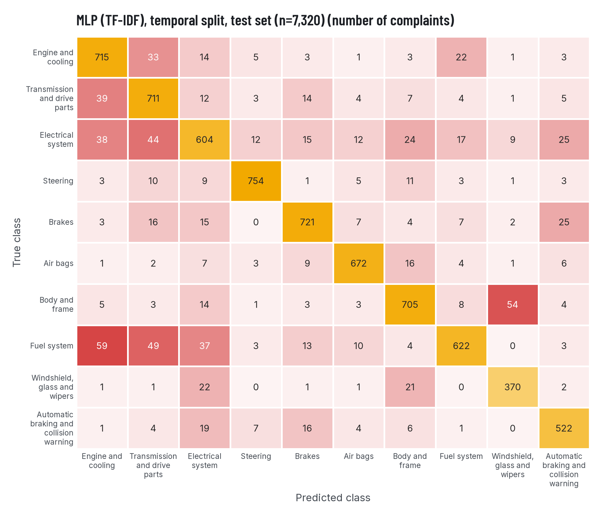
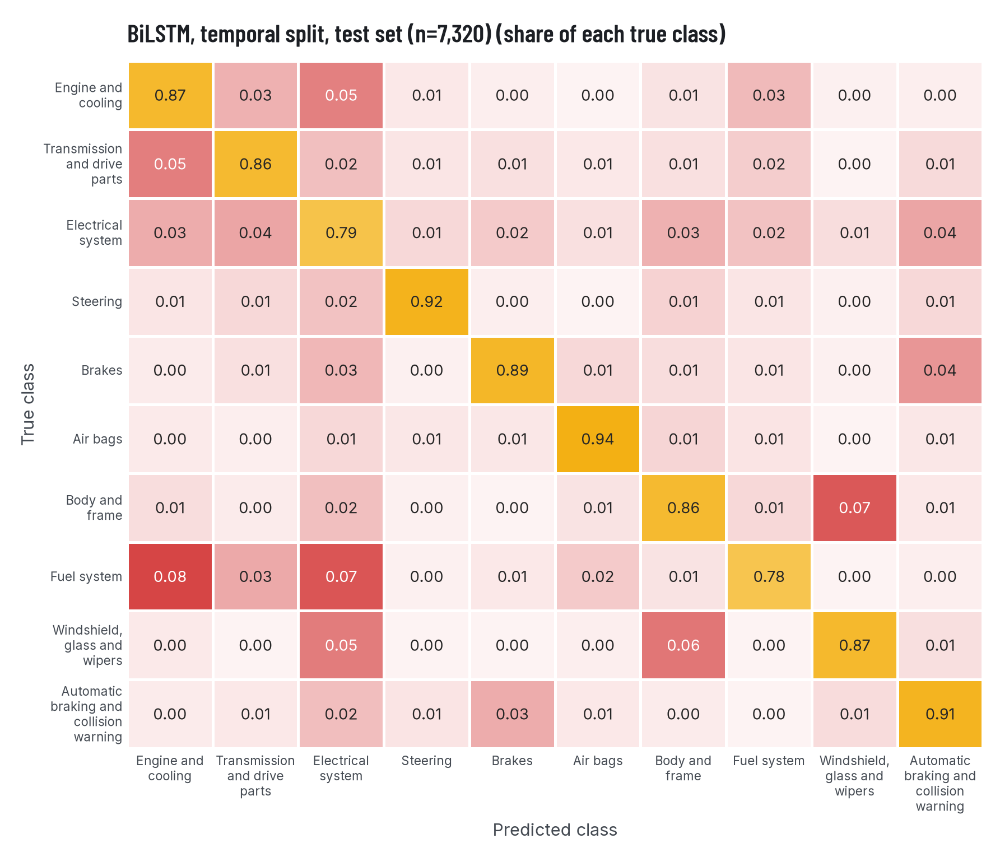
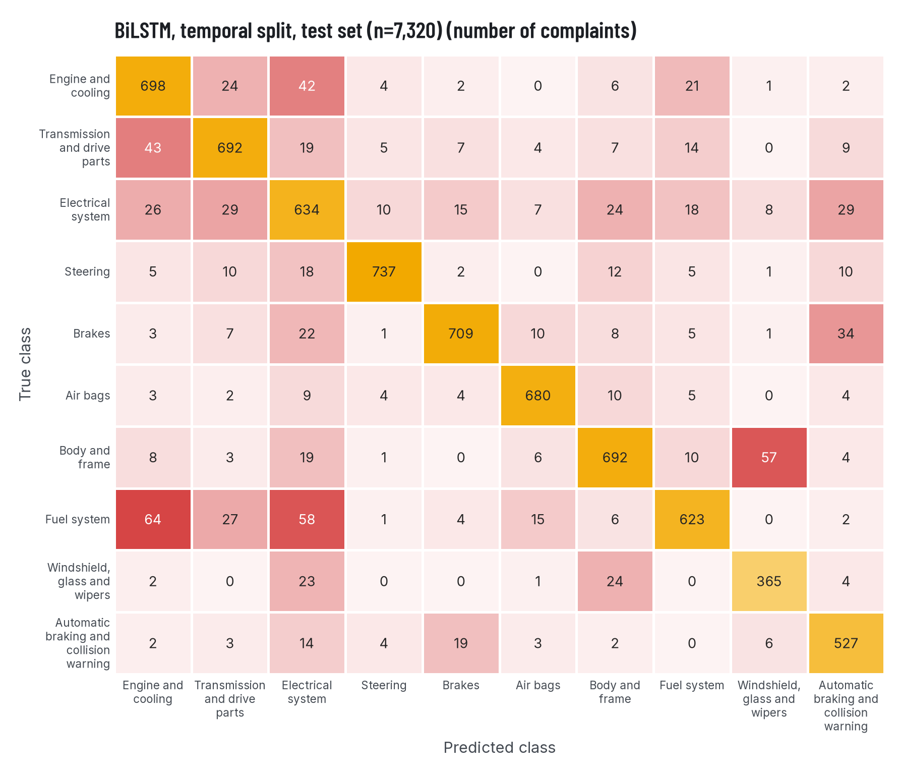
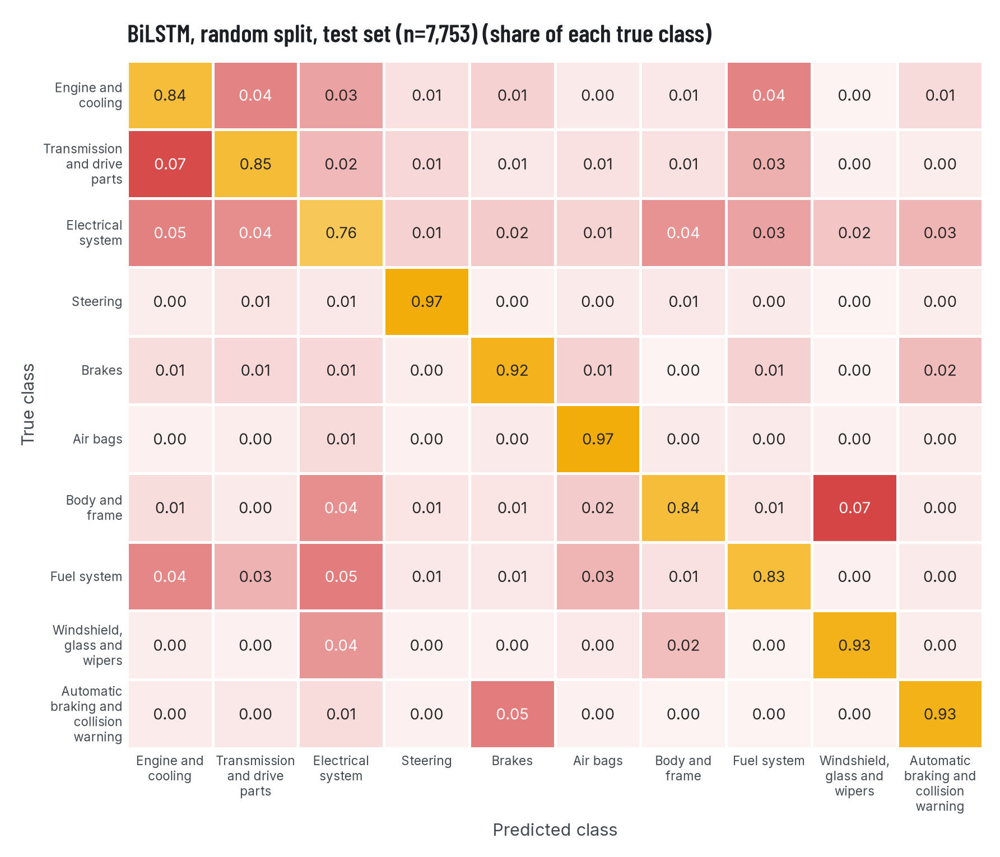
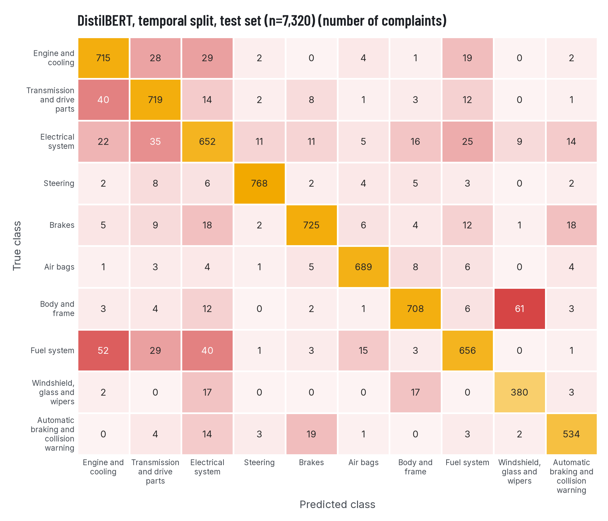
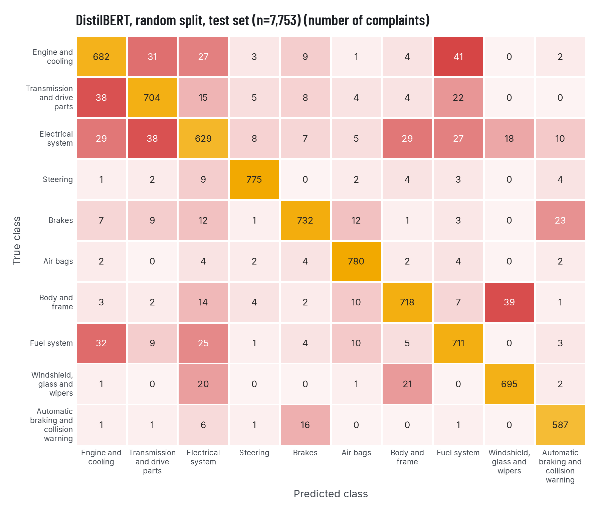

Summary
All numbers are on the test set, which each model scored once with its best validation checkpoint. Accuracy is the share of test complaints sorted correctly. Macro-F1 averages the F1 score of the 10 classes, so a small class counts as much as a large one. The interval is a 95% bootstrap interval from 1,000 resamples of the test texts.
Time-based test (main): complaints from May to October 2026
Random split test (comparison)
Full table: validation and test, both splits
| Model | Split | Val acc | Val macro-F1 | Test acc | Test macro-F1 | 95% interval (test macro-F1) | Train time |
|---|---|---|---|---|---|---|---|
| MLP (TF-IDF) | temporal | 0.8685 | 0.8704 | 0.8738 | 0.8739 | 0.8658 to 0.8812 | 22 s |
| MLP (TF-IDF) | random | 0.8836 | 0.8846 | 0.8840 | 0.8849 | 0.8780 to 0.8923 | 16 s |
| BiLSTM | temporal | 0.8688 | 0.8711 | 0.8684 | 0.8689 | 0.8609 to 0.8768 | 33 min |
| BiLSTM | random | 0.8816 | 0.8821 | 0.8812 | 0.8817 | 0.8743 to 0.8889 | 22 min |
| DistilBERT | temporal | 0.8907 | 0.8941 | 0.8943 | 0.8945 | 0.8873 to 0.9012 | 49 min |
| DistilBERT | random | 0.9026 | 0.9035 | 0.9046 | 0.9053 | 0.8990 to 0.9112 | 37 min |
On the time-based test (complaints from May to October 2026), DistilBERT reaches 0.8943 accuracy and 0.8945 macro-F1. The MLP reaches 0.8739 and the BiLSTM 0.8689. The test classes are capped at 800, so the class mix is balanced and differs from the real mix of complaints.
Are the differences real?
We checked two ways. McNemar's test compares the models on the same test complaints: it counts the complaints where one model is right and the other is wrong. The paired bootstrap resamples the test set and recomputes the difference in macro-F1.
| Pair | Only first is right | Only second is right | p-value (exact McNemar) |
|---|---|---|---|
| MLP (TF-IDF) vs BiLSTM | 297 | 258 | 0.11 |
| MLP (TF-IDF) vs DistilBERT | 189 | 339 | 6.7e-11 |
| BiLSTM vs DistilBERT | 158 | 347 | 2.5e-17 |
| Comparison | Split | Difference in test macro-F1 (points) | 95% interval (points) | Interval excludes 0 |
|---|---|---|---|---|
| BiLSTM minus MLP (TF-IDF) | temporal | -0.49 | -1.14 to +0.20 | no |
| DistilBERT minus MLP (TF-IDF) | temporal | +2.07 | +1.47 to +2.70 | yes |
| DistilBERT minus BiLSTM | temporal | +2.56 | +1.94 to +3.17 | yes |
| BiLSTM minus MLP (TF-IDF) | random | -0.31 | -0.90 to +0.28 | no |
| DistilBERT minus MLP (TF-IDF) | random | +2.04 | +1.41 to +2.59 | yes |
| DistilBERT minus BiLSTM | random | +2.35 | +1.74 to +2.93 | yes |
DistilBERT beats both other models on both splits: the intervals exclude 0, and the McNemar p-values on the temporal set are 7e-11 (against the MLP) and 3e-17 (against the BiLSTM). The MLP and the BiLSTM are a weak case. On the temporal split the BiLSTM is 0.5 points lower, the interval includes 0 and the McNemar p-value is 0.107, which is above 0.05 and would also fail a correction for three comparisons (the cutoff is 0.0167). On the random split the interval includes 0 as well. We treat the two as roughly equal, with the MLP slightly ahead on the temporal split.
Time-based split vs random split

A random split scores higher for every model: 1.10 points for the MLP, 1.28 for the BiLSTM and 1.07 for DistilBERT in macro-F1. The time-based split is the fairer test of a system that sorts future complaints, so we report it as the main result. The gap is small, and we did not study why.
Results by class

| Class | MLP | BiLSTM | DistilBERT |
|---|---|---|---|
| Steering | 0.950 | 0.941 | 0.966 |
| Air bags | 0.933 | 0.940 | 0.952 |
| Brakes | 0.903 | 0.908 | 0.921 |
| Automatic braking and collision warning | 0.886 | 0.875 | 0.919 |
| Body and frame | 0.881 | 0.870 | 0.905 |
| Transmission and drive parts | 0.850 | 0.867 | 0.877 |
| Windshield, glass and wipers | 0.863 | 0.851 | 0.872 |
| Engine and cooling | 0.859 | 0.844 | 0.871 |
| Fuel system | 0.836 | 0.830 | 0.851 |
| Electrical system | 0.778 | 0.765 | 0.812 |
Same table for the random split
| Class | MLP | BiLSTM | DistilBERT |
|---|---|---|---|
| Steering | 0.955 | 0.960 | 0.969 |
| Air bags | 0.947 | 0.943 | 0.960 |
| Brakes | 0.894 | 0.914 | 0.925 |
| Automatic braking and collision warning | 0.927 | 0.918 | 0.942 |
| Body and frame | 0.877 | 0.871 | 0.904 |
| Transmission and drive parts | 0.856 | 0.852 | 0.882 |
| Windshield, glass and wipers | 0.923 | 0.915 | 0.932 |
| Engine and cooling | 0.847 | 0.829 | 0.855 |
| Fuel system | 0.850 | 0.849 | 0.878 |
| Electrical system | 0.772 | 0.767 | 0.806 |
Steering and air bags are easiest. Electrical system is the weakest class for every model on both splits: F1 0.778 for the MLP, 0.765 for the BiLSTM and 0.812 for DistilBERT on the temporal test. DistilBERT improves it by 3.4 points over the MLP, but it stays the weakest. The fuel system is next-lowest for every model.
Confusion matrices
Each row is the true class and each column is the predicted class. A perfect model would have 1.00 on the diagonal. Amber cells are correct answers and red cells are mix-ups. With JavaScript on, the tabs show one model, split and view at a time; without it all twelve matrices are listed.












The top mix-ups on the temporal test, both directions combined, are in the table below. Source: results/eval/<model>/temporal/metrics.json.
| Model | Pair 1 | Pair 2 | Pair 3 |
|---|---|---|---|
| MLP (TF-IDF) | Engine and cooling / Fuel system: 81 | Body and frame / Windshield, glass and wipers: 75 | Engine and cooling / Transmission and drive parts: 72 |
| BiLSTM | Engine and cooling / Fuel system: 85 | Body and frame / Windshield, glass and wipers: 81 | Electrical system / Fuel system: 76 |
| DistilBERT | Body and frame / Windshield, glass and wipers: 78 | Engine and cooling / Fuel system: 71 | Engine and cooling / Transmission and drive parts: 68 |
Training curves
The left panel shows training and validation loss, the right panel shows validation macro-F1. The ringed point marks the checkpoint we kept. The MLP overfits after the first epoch, which is why its best epoch is 1.


Random split curves


Call-centre texts vs owner-written texts
7,320 test complaints split into 5,724 owner-written texts and 1,596 call-centre texts. Accuracy is about the same for both. Macro-F1 looks lower for call-centre texts, but only 7 of them belong to the windshield and wiper class, so that class's F1 is very noisy. The last column drops classes with fewer than 30 texts in the group, and then the two groups score in the same range for every model. We found no sign that the formal call-centre style makes the task easier.
| Model | Text type | Texts | Accuracy | Macro-F1 | 95% interval | Macro-F1, classes with 30+ texts |
|---|---|---|---|---|---|---|
| MLP (TF-IDF) | owner-written | 5,724 | 0.872 | 0.873 | 0.865 to 0.882 | 0.873 |
| BiLSTM | owner-written | 5,724 | 0.864 | 0.867 | 0.859 to 0.875 | 0.867 |
| DistilBERT | owner-written | 5,724 | 0.895 | 0.897 | 0.889 to 0.905 | 0.897 |
| MLP (TF-IDF) | transcript | 1,596 | 0.880 | 0.858 | 0.824 to 0.884 | 0.876 |
| BiLSTM | transcript | 1,596 | 0.884 | 0.860 | 0.826 to 0.886 | 0.878 |
| DistilBERT | transcript | 1,596 | 0.891 | 0.860 | 0.825 to 0.885 | 0.891 |
Where the models fail
- Neighboring groups. For DistilBERT the largest mix-up is body and frame versus windshield, glass and wipers (78 complaints), followed by engine and cooling versus fuel system (71 complaints) and engine and cooling versus transmission and drive parts (68 complaints). A symptom such as a car that stalls, shudders or loses power can fit several systems, and a sunroof that breaks can count as body or as glass.
- Shared mistakes. 1,307 of 7,320 test complaints are wrong for at least one of the three models, and the 513 in the box above are wrong for all of them.
- Stubs. Some call-centre texts keep only a stub such as “the contact received notification of; however, the part to do the recall repair was not yet available”, because we removed the campaign number and component name. 229 test texts contain such a stub. DistilBERT is right on 77.7% of them, against 89.8% of the other texts.
- Keywords. The highlights below show a model leaning on one word. In example 3, the word “braking” is among the top supporting words for both models and pulls a complaint about a door sensor toward collision avoidance, even though NHTSA filed it under the electrical system.
- Labels are not ground truth. NHTSA staff assign the groups, and a complaint that fits two groups gets only one label here.
- Truncation. The BiLSTM keeps the first 256 tokens: 4.4% of training texts and 9.1% of test texts are longer.
- Vehicle names. Brand and model names stay in the text. Some of the score may come from knowing which vehicles have which known problems.
- Balanced test. Classes are capped at 800 in the test set, so the numbers describe a balanced mix, not the real mix of complaints. Windshield and wipers, air bags and collision avoidance have fewer than 800 test complaints.
- Scope. We use only complaints with one label, in ten groups, from one six-month test window.
Examples of mistakes
15 random misclassified complaints (DistilBERT, temporal)
| True class | Predicted class | Confidence | Written by | Text (first 300 characters) |
|---|---|---|---|---|
| Engine and cooling | Electrical system | 0.38 | owner | on four different occasions the car starts flashing red saying to immediately put in park. we lose all control of the car, have to slowly coast to the side of the highway and turn the car off. when we turn it back on, drive again, it will happen shortly after. it has happened two different days abou |
| Transmission and drive parts | Engine and cooling | 0.99 | owner | l87 recall was completed on 10/22/2025. on august 8th 2026 the engine developed a loud knock. it was taken to the dealership on 8/31/2026 after inspection it was determined that the engine had failed and needed to be replaced. there was no warning lamps that indicated there was an issue with the eng |
| Windshield, glass and wipers | Body and frame | 0.51 | owner | the sunroof on vehicle is not able to open/close correctly due to track/clips broken. vehicle was purchased used january 2023. the sunroof has been used less than 5 times during this period. i spoke to a service advisor at the local dealership, bulldog kia of athens , ga. he confirmed that there is |
| Engine and cooling | Transmission and drive parts | 0.99 | owner | component: automatic transmission, 2026 toyota grand highlander hybrid max platinum awd. available for inspection. purchased new 11/21/2025 at zero miles. beginning ~2000 miles (est feb 2026), intermittent transmission malfunction during acceleration: transmission holds gears at elevated rpms beyond |
| Fuel system | Engine and cooling | 0.91 | owner | engine revving at a complete stop. surging engine while braking. i was forced to put into neutral when stopping. i had check engine prior that read p049d85. it went away. the hyundai dealer said to be the egr valve. nick hayes at d'arcy hyundai and hyundai motor america (hma) agreeing to a 75% goodw |
| Fuel system | Engine and cooling | 0.51 | call centre | the contact owns a 2021 ford f-250 sd. the contact stated that while idling and while driving, the engine was running rough and the engine power was reduced. the contact associated the failure with; however, the part to do the recall repair was not yet available. the contact stated that the manufact |
| Electrical system | Transmission and drive parts | 0.58 | call centre | the contact owns a 2023 ram 1500. the contact stated that while driving 40 mph, the vehicle lost motive power. the battery light was illuminated and displayed 0 percent but then increased to 25 percent. due to the failure, the vehicle failed to shift into neutral, and the contact was unable to activ |
| Engine and cooling | Transmission and drive parts | 0.97 | call centre | the contact owns a 2025 honda pilot. the contact stated that on multiple occasions, upon acceleration from a complete stop, the vehicle shifted into neutral and would not shift into drive. when the failure occurred, the contact was forced to restart the vehicle before continuing to drive. the check |
| Brakes | Electrical system | 0.74 | owner | nhtsa #: i purchased this vehicle to rent it out on turo (a vehicle sharing platform). it was de-listed from turo on march 18 due to nhtsa # recall being unresolved. i have been unable to rent my vehicle since then and ford has not provided a remedy to this recall. i would like to log a complaint th |
| Automatic braking and collision warning | Electrical system | 0.55 | owner | tesla fsd failed to measure an entrance correctly and scratched the left side of the truck. affected left rear passenger door, left rear flares, left rocker panel. |
| Electrical system | Engine and cooling | 0.59 | owner | vehicle stalled several times. check engine light and many code came up. crack sensors replaced. veh still stalls. dealer and independent dealer believes it might be cpu. all wires from cpu checked with no issue found. when veh stalls if you manipulate the wire veh will start and run with demished p |
| Transmission and drive parts | Engine and cooling | 0.94 | owner | my 2021 chevrolet silverado 1500 with the 3.0 diesel is experiencing constant high running engine fan, engine power reduced notification on the dash, fluctuating temperature and is showing a p1098 code indicating the coolant control valve needs replaced. gm has issued a special coverage on this part |
| Engine and cooling | Transmission and drive parts | 0.40 | owner | while driving at multiple speeds a complete loss of power occurs from 15-30 seconds. then will automatically re-engage at the speed when the power loss initiated. bike does not code and does not have to be manually restarted. a huge safety issue when in traffic. |
| Transmission and drive parts | Engine and cooling | 0.98 | owner | with out any warning engine shake and running roughly loud engine noise more than ticking and losing power with reduce speed |
| Electrical system | Engine and cooling | 0.63 | call centre | the contact owns a 2020 kia niro. the contact stated that while driving at an undisclosed speed, the coolant system warning light illuminated. the contact stated that after entering the vehicle following a charging session, there was a burning odor coming from the vehicle while the coolant system wa |
Other models: MLP, BiLSTM. Complaints wrong for all three models: errors_all_models.csv.
5 random confident correct predictions
| Class (correct) | Confidence | Text (first 300 characters) |
|---|---|---|
| Electrical system | 0.99 | when starting vehicle, the av screen turns on but the screen is black. the screen lighting still illuminates but no other functions appear. camera still works and shows when reversing but no entertainment is available. |
| Air bags | 1.00 | b1022 occupant sens c/u [comm fail] - current b1022 occupant sens c/u [comm fail] - past passenger seat air bag: there is a recall on this part for my vehicle's year make and model, but my vin shows my car isn't apart of the recall. |
| Steering | 1.00 | steering rack needs to be replaced per dealership. reported loud clunking noise when turning. not covered under warranty. was told it was regular car maintenance. 49k miles with bumper to bumper expired a month before complaint. have noted in forums multiple complaints for same issue yet jeep refuse |
| Body and frame | 1.00 | both the front passenger and front driver's side doors will not open from the inside. first, the passenger side door handle became defective (i took it to the toyota dealer and they said the interior handle assembly broke where the cable connects to the handle). the part is back ordered in the thous |
| Steering | 1.00 | steering wheel is sticking. it’s like the wheels grip and wanders to the left when go straight. if i slightly turn wheel to the right to correct steering it jumps/jerks to the right. |
Which words drive a prediction
For six test complaints we removed one word at a time and measured how much the model's confidence in its own answer dropped. Amber words support the predicted class and gray words argue against it. The value is the drop in the log-odds of the predicted class (hover over a word to see it). Two examples were right for both models, two were wrong for both, and two were right for DistilBERT and wrong for the BiLSTM. We drew them at random from complaints of 25 to 90 words (seed 42), two from each case. Method and values: results/eval/word_importance/word_importance.json.
Example 1: Automatic braking and collision warning (both models right)
automatic braking system engaged without any warning and without any impending danger in front of me at night on pulaski skyway, bringing the vehicle to a complete halt.
automatic braking system engaged without any warning and without any impending danger in front of me at night on pulaski skyway, bringing the vehicle to a complete halt.
Example 2: Brakes (both models right)
i added a post last year at my 10k service stating my rear brake pads needed to be replaced. update with my 20k service: rear brake pads and rotors need to be replaced again. rear brake pads down to 2 mm, front pads (original) still at 12 mm. this is a safety issues with financial consequences.
i added a post last year at my 10k service stating my rear brake pads needed to be replaced. update with my 20k service: rear brake pads and rotors need to be replaced again. rear brake pads down to 2 mm, front pads (original) still at 12 mm. this is a safety issues with financial consequences.
Example 3: Electrical system (both models wrong)
the door closed sensor fails intermittently. this causes the car to sound an alarm while driving, prevents locking of the doors, and results in automated sudden braking at low speeds, such as in heavy stop & go traffic, causing a significant crash hazard. when it engages in the emergency braking routine, it shifts out of gear, so you can’t prevent a rear collision by simply accelerating, you must rapidly shift the car into gear, first.
the door closed sensor fails intermittently. this causes the car to sound an alarm while driving, prevents locking of the doors, and results in automated sudden braking at low speeds, such as in heavy stop & go traffic, causing a significant crash hazard. when it engages in the emergency braking routine, it shifts out of gear, so you can’t prevent a rear collision by simply accelerating, you must rapidly shift the car into gear, first.
Example 4: Body and frame (both models wrong)
as i was driving on the interstate, i heard a gunshot-like explosion and the sunroof glass broke. glass shards fell into the car. i had to slow down to 30 mph and exit the interstate. there was no obvious road debris or cars around me at the time of the incident. i drove the car to the dealership where it is for repair
as i was driving on the interstate, i heard a gunshot-like explosion and the sunroof glass broke. glass shards fell into the car. i had to slow down to 30 mph and exit the interstate. there was no obvious road debris or cars around me at the time of the incident. i drove the car to the dealership where it is for repair
Example 5: Fuel system (right for DistilBERT, wrong for the BiLSTM)
the internal fuel pump/fuel pump circuit on my 2020 jeep grand cherokee (vin: [xxx] ) failed prematurely, resulting in a sudden and severe 'no-crank' safety hazard. the fuel pump failure triggered a massive electrical current draw that shorted out the powertrain/engine control module communications and locked out the starter motor entirely. this electrical failure leaves the vehicle completely stranded, inoperable, and creates a significant risk of stalling in active traffic without power steering or propulsion.
the internal fuel pump/fuel pump circuit on my 2020 jeep grand cherokee (vin: [xxx] ) failed prematurely, resulting in a sudden and severe 'no-crank' safety hazard. the fuel pump failure triggered a massive electrical current draw that shorted out the powertrain/engine control module communications and locked out the starter motor entirely. this electrical failure leaves the vehicle completely stranded, inoperable, and creates a significant risk of stalling in active traffic without power steering or propulsion.
Example 6: Windshield, glass and wipers (right for DistilBERT, wrong for the BiLSTM)
while sitting in the passenger seat of the car, the sunroof spontaneously exploded, causing shards of glass to go everywhere and putting my and the driver’s safety at risk while traveling at 70 mph. no one has inspected it yet and there were no warning messages prior to this issue. this happened on july 3rd, 2026 at 2pm.
while sitting in the passenger seat of the car, the sunroof spontaneously exploded, causing shards of glass to go everywhere and putting my and the driver’s safety at risk while traveling at 70 mph. no one has inspected it yet and there were no warning messages prior to this issue. this happened on july 3rd, 2026 at 2pm.
Removing one word at a time understates words that are repeated or have close substitutes, so a confident model can show small values everywhere. These examples illustrate the models. They do not prove how the models work.
Files
Everything is in the repository: summary_table.csv, significance.json, transcript_vs_owner.csv, and the per-model folders under results/. The evaluation script is 08_evaluate.py.